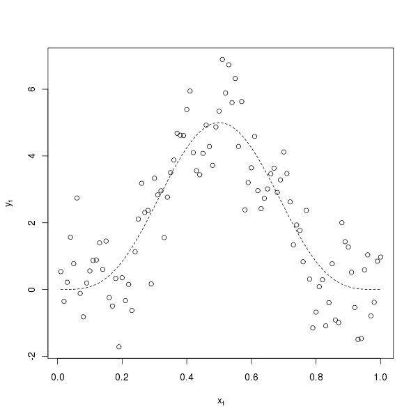
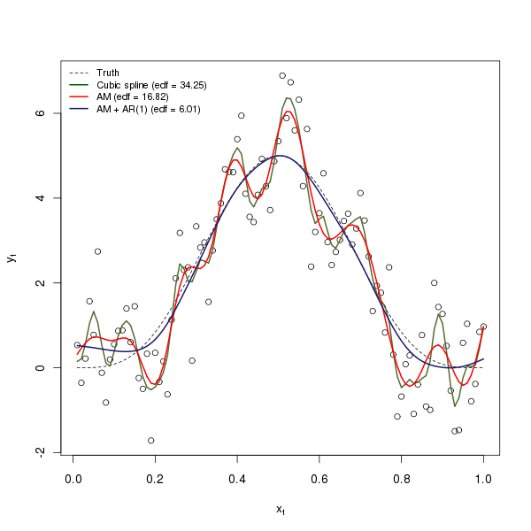

Smoothing temporally correlated data
Posted in
Tagged
Blogroll
Something I have been doing a lot of work with recently are time series data, to which I have been fitting additive models to describe trends and other features of the data. When modelling temporally dependent data, we often need to adjust our fitted models to account for the lack of independence in the model residuals. When smoothing such data, however, there is an additional problem that needs to be addressed when we are determining the complexity of the fitted smooths as part of the model fit.
Unless we specifically tell the software that the data aren’t independent it will perform smoothness selection assuming that we have \( n \) independent observations. The risk then is that too-complex a smooth term is fitted to the data — it is no-longer a case of updating the fitted model, the model itself will be over-fitted. In this post I want to illustrate the problem of smoothing correlated data with an example from a chapter in a text book that a reviewer alerted to me to some time back.
The example comes from Kohn, Schimek and Smith (2000) that I have cooked up using R. Kohn et al consider the model \( f(x_{t}) = 1280 x_{t}^4 (1 - x_{t})^4 \), where \( t = 1, 2, \ldots, 100 \), and \( x_{t} = t/100 \). To this, errors \( e_{t} \) are generated from a first-order auto-regressive (AR(1)) process with \( \phi_{1} = 0.3713\) to produce a random sample from the model such that \( y_{t} = f(x_{t}) + e_{t}\). We can generate a sample of data from this model with the following R code
set.seed(321)
n <- 100
time <- 1:n
xt <- time/n
Y <- (1280 * xt^4) * (1- xt)^4
y <- as.numeric(Y + arima.sim(list(ar = 0.3713), n = n))The arima.sim() function is used to generate the appropriate AR(1) errors. A plot of this sample of data and the true function are shown below

To these data, I will fit a cubic smoothing spline via smooth.spline() and an additive model via gam() in package mgcv. In addition, let us assume that we don’t know the exact nature of the dependence in the data but we know that they are temporally correlated so that we can fit a model that includes a plausible correlation structure. For that, I will use an additive model with an AR(1) correlation structure, fitted using a linear mixed effects representation of the additive model via the gamm() function, also from the mgcv package. gamm() uses the lme() function from the nlme package. I will arrange for the value of \( \phi_{1}\) be estimated as one of the model parameters, whilst the degree of smoothness is being estimated during fitting. The three models are fitted with the following three lines of R code:
m1 <- smooth.spline(xt, y)
m2 <- gam(y ~ s(xt, k = 20))
m3 <- gamm(y ~ s(xt, k = 20), correlation = corAR1(form = ~ time))The three model fits are shown in the figure below

Both the cubic smoothing spline and the additive model over fit the data, resulting in very complex smooth functions using 34.25 and 16.82 degrees of freedom respectively. The additive model with AR(1) errors does a very good job of retrieving the true function from which the data were generated, only really deviating from this function at low values of \( x_{t}\) where there are few data to constrain the fit. The code used to produce the figure is shown below
edf2 <- summary(m2)$edf
edf3 <- summary(m3$gam)$edf
plot(y ~ xt, xlab = expression(x[t]), ylab = expression(y[t]))
lines(Y ~ xt, lty = "dashed", lwd = 1)
lines(fitted(m1) ~ xt, lty = "solid", col = "darkolivegreen", lwd = 2)
lines(fitted(m2) ~ xt, lty = "solid", col = "red", lwd = 2)
lines(fitted(m3$lme) ~ xt, lty = "solid", col = "midnightblue", lwd = 2)
legend("topleft",
legend = c("Truth",
paste("Cubic spline (edf = ", round(m1$df, 2), ")", sep = ""),
paste("AM (edf = ", round(edf2, 2), ")", sep = ""),
paste("AM + AR(1) (edf = ", round(edf3, 2), ")", sep = "")),
col = c("black", "darkgreen", "red", "midnightblue"),
lty = c("dashed", rep("solid", 3)),
lwd = c(1, rep(2, 3)),
bty = "n", cex = 0.8)The intervals() function can be used to extract the estimate for \( \phi_{1} \) and a 95% confidence interval on the estimate:
> intervals(m3$lme, which = "var-cov") ## edited for brevity
....
Correlation structure:
lower est. upper
Phi 0.1705591 0.4032966 0.5934125
attr(,"label")
[1] "Correlation structure:"
....
Despite being somewhat imprecise, the estimate, \( \hat{\phi}_{1} = 0.4033 \), is very close to the known values used to generate the sample of data.
Whilst being a little contrived (I purposely increased the basis dimension on the basic additive model to k = 20 [otherwise the fit with the default k is close the model with AR(1) errors!], and use GCV smoothness selection rather than the better performing ML or REML methods available in gam()), the example shows quite nicely the problems associated with smoothness selection when fitting additive model to dependent data. If you know something about the system under study and the sort of variation in the data one might expect to observe, an alternative approach to fitting an additive model to dependent data would be to fix the smoothness at an appropriate, low value. To perform any subsequent inference on the fitted model, we would have to estimate a correlation matrix from the residuals of that model using a time series model and use that to update the covariance matrix of the fitted additive model. I’m still working on how to do that last bit with gam() and mgcv.
References
Kohn R., Schimek M.G., Smith M. (2000) Spline and kernel regression for dependent data. In Schimekk M.G. (Ed) (2000) Smoothing and Regression: approaches, computation and application. John Wiley & Sons, Inc.
Social